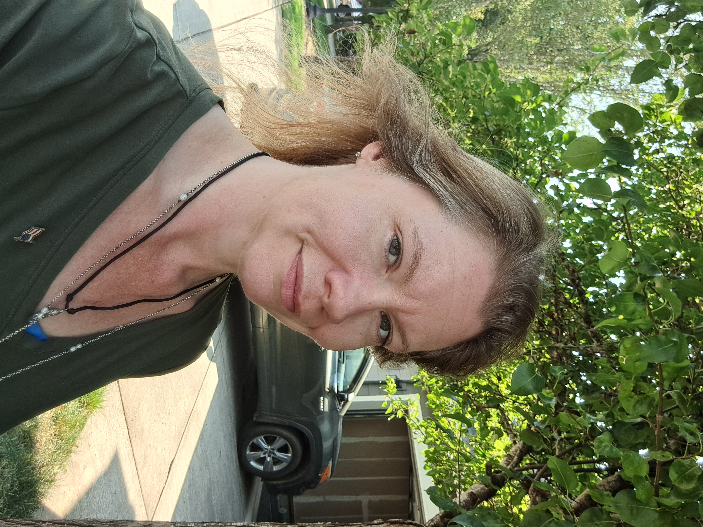
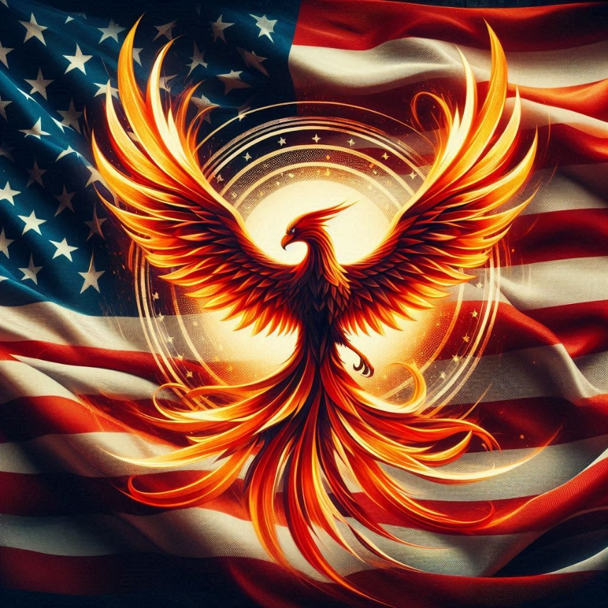

Welcome to Suzzanna Tanner's Website

Greetings fellow Americans!
I'm Suzzanna Tanner, candidate for Congress-2026 and President of the United States-2028.
About Me
I have been watching our nation all of my life. I watched the television and listened to the radio with my grandmother regularly. When I was 15, President Bill Clinton ran for re-election. I was fortunate enough to watch his debate with Bob Dole. As I watched, I knew that I could be president one day. But there was something he said that stuck with me. Check out the About Suzzanna page to learn more.
Contact me on social media.
Podcasts
I host a political podcast where I discuss current events, government policies, and societal issues affecting our nation. It can be watched on YouTube or listened to on Spotify and iHeart Radio.
State of Our Nation Podcast
Spotify - Audio
